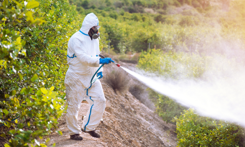

그러나 꿀벌을 지키는것은, 곧 우리 인간을 지키는것과 같습니다.
꿀이나 옮기고 다니는 꿀벌이 어째서 핵심종인지 모르는 사람들도 있습니다. 누군가는 꿀벌보단 우리 인간을 신경써야하지않냐고 말하기도 합니다. 그러나 꿀벌을 지키는것은, 곧 우리 인간을 지키는것과 같습니다.
꿀벌은 꿀을 모으기 위해 꽃을 옮겨 다니는데, 이 과정에서 꿀벌에 몸에 묻는 꽃가루가 다른 꽃으로 옮겨지며 수분이 일어납니다. 즉, 꿀벌이 있어야 열매를 맺을수있다는 소리입니다.
이런방식으로 인간이 먹는 전체 식량 생산의 약 33%가 꿀벌의 수분 활동에 의존하고있습니다. 심지어
아몬드나 양파, 아보카도는 꿀벌 의존도가 90%~100%에 해당하기때문에 꿀벌이 멸종한다면 이들 역시 회생이 불가능할 정도의 큰 타격을 받게됩니다. 실제로 알베르트 아인슈타인(1879~1955)은 꿀벌이 멸종되면 인간도
4년내에 멸종될것이라고 말한적이 있을정도로 꿀벌의 존재는 우리 인간에게도 매우 중요하다는것을
알수있습니다.
그러나 이런 꿀벌의 개체수는 현재 많이 감소하고있는 추세입니다. 특히 2022년에는 전국에서 약 70억 마리의 벌들이 단체로 실종되는 현상이 발생되기도했습니다. 어째서 이런일이 일어나게 된걸까요?
 온도
온도꿀벌 개체수
-
2012
-
2013
-
2014
-
2015
-
2016
-
2017
-
2018
-
2019
기온 데이터를 수집하여 상관계수를 분석해봤습니다. 결과는 약 -0.55정도로 그 기간 사이에 꿀벌에게
치명적인 바이러스의 등장 및 예방법 체계화등의 변수가 발생한것을 감안하더라도 어느정도 유의미한
음의 상관관계가 있음을 알게되었습니다.
일어났다고말했는데, 이 수치가 겨울의 기온 상승과 관련이 있을까 21년 11월~12월의 기온을 조사해본결과
그 시기에 최고기온이 11월은 20도를 넘겼고, 12월에도 15도를 넘는등의 이상 고온현상이 발생했음을
알아 수 있습니다.
연평균 기온 데이터를 보면 과거에 비해 기온이 높아졌음을 알수있는데, 이로인해 겨울이 따뜻해지고 앞서
설명한 이상 고온 현상이 일어나면서 일부 지역에 꽃이 피고 월동에 들어갔던 꿀벌이 계절을 착각해 꽃가루를 채집하러 갔다가 돌아오지 못하게되는것입니다. 또한 기온이 높아질경우 꿀벌에게 전염병을 퍼트리는 해충인 꿀벌응애가 활동하기 편한 환경이 되는것도 현재 꿀벌의 개체수가 감소하고있는 주요 이유중 하나로 뽑힙니다.
그렇다면 이 현상을 해소하기위해 우리가 무슨 행동을 취해야할까요?
결국 꿀벌의 문제는 기후변화, 이상기후와 밀접한 관련이 있기때문에 기후변화를 늦추는것이
곧 꿀벌을 지키는것입니다.
앞으로 꿀벌이 더 줄어들지않게 하려면 우리가 할수있는 방법이 무엇이 있을까요?

방법으로는 크게 기후변화를 예방하는것과 꿀벌을 지키는것 2가지로 나뉩니다. 기후변화 예방으로는 흔히
말하는 탄소중립을 실천하는것인데 그 예시로는 일회용품 사용 줄이기, 전력 사용 줄이기,
육류와 유제품 사용 줄이기, 대중교통 이용하기등의 널리 알려진 방법들이 있고
꿀벌을 지키는 방법으로는 봄꽃 개화시기에 살충제 덜 쓰기, 진달래나 민들레등의 밀원식물을 주로 심기,
꿀벌에게 피해를 끼치는 기생충인 꿀벌응애를 올바른 방법과 시기에 맞춰 방제하기, 꿀벌에게 매우 치명적인 네오니코티노이(Neonicotinoid) 살충제를 쓰지않는것등이 있습니다
우리는 꿀벌이 생태계에 있어서도, 인간에게 있어서도 얼마나 중요한 생물인지 인지해야할 필요가있고,
이 작고 소중한 생물을 지키기위해 여러 노력들을 기울일 필요가 있습니다.